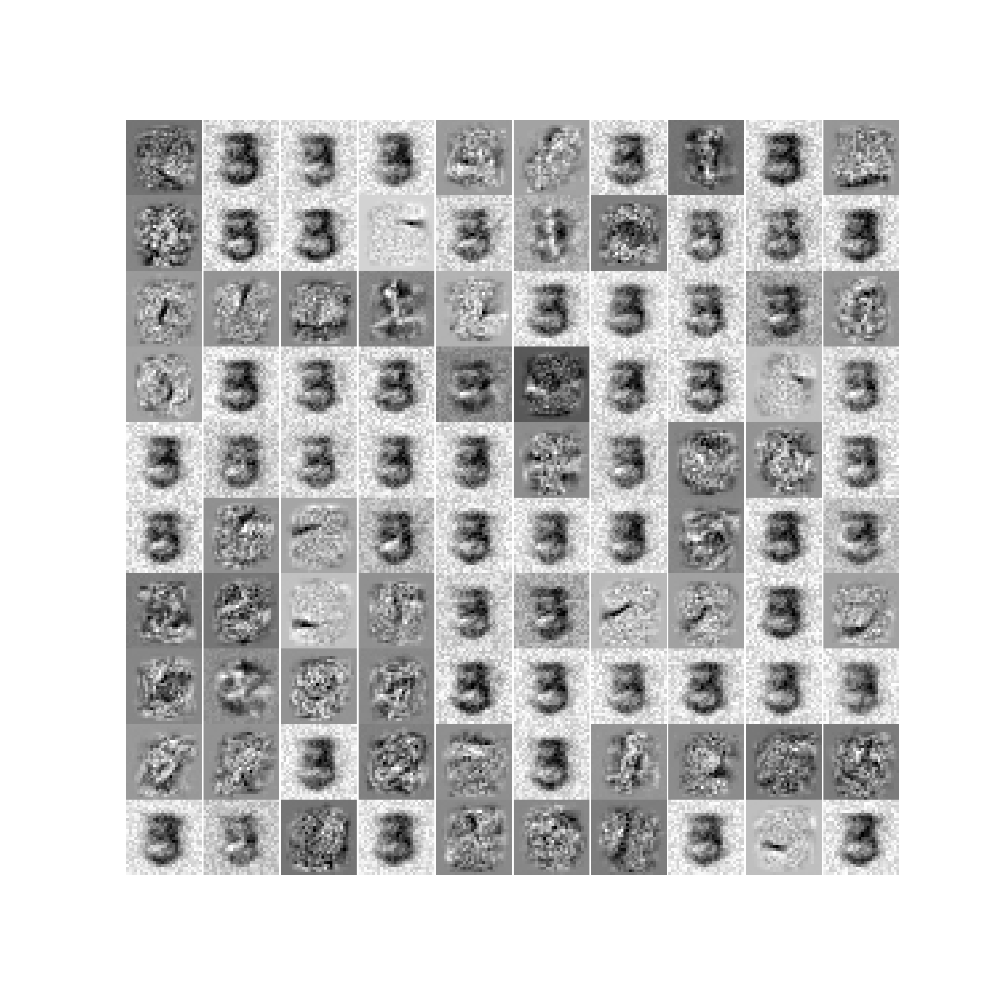

The leanring curves with respect to cross-entropy error of all 6 random initializations are shown above.
The leanring curves with respect to cross-entropy error of all 6 random initializations are shown above.
The leanring curves with respect to cross-entropy error of all 6 random initializations are shown above.
In this question, we set the learning rate $l = 0.1$, and the number of epochs equals to 200 with batch size $N_{batch} = 64$. Since we used a setup that requires sufficient epochs to attain a status like overfitting, we can note that most of the training process have a pattern of overfitting. In axes of seed 42, 422, 442, 4422, and 4442, the cross-entropy loss started from different values with different initializations and decreased quickly in the first 25 epochs, then as the number of training epochs increased, the cross-entropy error slowly decreased to 0 with some fluctuations while the validation(we use test set here) cross-entropy error slightly increased from 0.2 to around 0.3, so these plots show that their corresponding training process involves overfitting. In other words, the single neural networks began to become weaker for generalization while still working well on the training set.
Also note that the training process with seed 4222 got unique learning curve, which includes a much higher initial cross-entropy loss and the learning process has several cliff drops and seems to have no significant overfitting pattern. This could be the result of a relatively unlucky initialization with parameters that were far from the local optimal point. Finally it also got the training error close to 0 and validation error close to 0.3, but the time cost to attained same performance is higher than the other random initializations.
 The leanring curves with respect to misclassification error of all 6 random initializations are shown above.
The leanring curves with respect to misclassification error of all 6 random initializations are shown above.
The learning curves of average misclassification error are pretty similar to learning curves based on cross-entropy error. They have the same quick decreasing section in the first 25 epochs and an overfitting section corresponding to the remaining epochs, and the fluctuation is at the same pace. Seed 4222 also got cliff drops in this learning curve and takes longer time to earn the same performance as other neural networks.
However, note that the overfitting parts of these plots are different from those in cross-entropy loss, the validation means misclassification error with seeds 42, 422, 442, 4422, and 4442 nearly maintaining the same value with some little noise in the overfitting phase, and the training loss of mean misclassification keep decreasing to 0. In previous question, the cross-entropy error on test set was slowly increasing. If we measure the ability of generalization of the neural networks by using mean misclassification error, then this ability is not damaged by overfitting.
_table.png) The table of evaluation metrics is shown above.
The table of evaluation metrics is shown above.
We select the best model based on mean misclassification error on test set which can represent the test accuracy, and the cross entropy error on test set. Singel layer neural network with seed 42 has the lowest mean test misclassification error and relatively low test cross-entropy error, so we identify it as the best model.
 This is the visualization of the parameters learned from the best model with seed 42. It's clear that the most frequent pattern is the feature like a shape of "3" with a shade like a shape of "8". There are also some chaotic features and some features with only part of the number or strokes shown in the restored features.